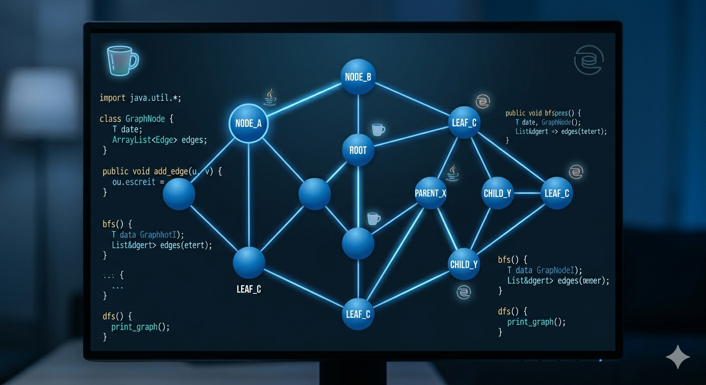
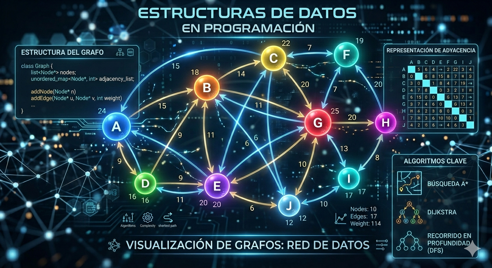
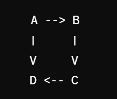
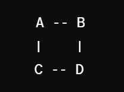

¿QUÉ ES GRAFOS
Los grafos son estructuras de datos que representan relaciones entre objetos mediante nodos (vértices) y conexiones (aristas). Son ampliamente utilizados en informática para modelar problemas complejos como redes sociales, sistemas de navegación, redes de transporte, entre otros.
.png)
import java.util.Scanner;
public class Grafo {
private int[][] matrizAdyacencia;
private int numVertices;
public Grafo(int numVertices) {
this.numVertices = numVertices;
this.matrizAdyacencia = new int[numVertices][numVertices];
}
public void agregarArista(int origen, int destino, int peso) {
matrizAdyacencia[origen][destino] = peso;
// Para grafos no dirigidos, descomenta la siguiente línea:
// matrizAdyacencia[destino][origen] = peso;
}
public void mostrarMatriz() {
System.out.println("Matriz de Adyacencia:");
for (int i = 0; i < numVertices; i++) {
for (int j = 0; j < numVertices; j++) {
System.out.print(matrizAdyacencia[i][j] + " ");
}
System.out.println();
}
}
public static void main(String[] args) {
Scanner scanner = new Scanner(System.in);
System.out.print("Ingrese el número de vértices: ");
int numVertices = scanner.nextInt();
Grafo grafo = new Grafo(numVertices);
System.out.println("Ingrese las aristas (origen, destino, peso). Ingrese -1 para terminar:");
while (true) {
int origen = scanner.nextInt();
if (origen == -1) break;
int destino = scanner.nextInt();
int peso = scanner.nextInt();
grafo.agregarArista(origen, destino, peso);
}
grafo.mostrarMatriz();
}
}
¿PARA QUE SIRVEN LOS GRAFOS?
Son una herramienta esencial en programación debido a su versatilidad y capacidad para modelar y resolver una amplia gama de problemas. Algunas áreas clave donde los grafos son fundamentales en programación: * Redes y Comunicación: Los grafos se utilizan para modelar redes de computadoras, sistemas de comunicación y enrutamiento de datos. Los nodos representan dispositivos (como computadoras o routers), y las aristas representan conexiones entre ellos. * Grafos Dirigidos Acíclicos (DAGs): Los DAGs se utilizan en sistemas de planificación y ejecución de tareas, donde las dependencias temporales entre actividades se modelan de manera eficiente. * Sistemas de Recomendación: Los grafos se utilizan para modelar relaciones entre usuarios y elementos en sistemas de recomendación, como redes sociales o plataformas de comercio electrónico, para predecir preferencias y ofrecer recomendaciones personalizadas. * Modelado de Relaciones: Los grafos se utilizan para representar relaciones y dependencias en una amplia variedad de campos, como bases de datos, análisis de dependencias en sistemas y modelado de estructuras de datos complejas

APLICACIÓN
* Redes de comunicación: Modelan redes de computadoras o Internet. * Mapas y rutas: Representan conexiones entre ubicaciones. * Redes sociales: Modelan relaciones entre personas. * Inteligencia artificial: Representan grafos de búsqueda en IA. * Sistemas de recomendaciones: Modelan preferencias de usuario y relaciones entre productos.

TIPOS DE GRAFOS
Grafos Dirigidos: En un grafo dirigido, también conocido como grafo orientado, cada arista tiene una dirección asociada. Esto significa que la relación entre dos vértices es unidireccional, y se representa mediante una flecha que indica la dirección de la conexión. La arista va desde un vértice inicial (fuente) hacia un vértice final (destino). La dirección en las aristas refleja la naturaleza de la relación entre los nodos. En este ejemplo, las aristas tienen dirección. Por ejemplo, hay una arista dirigida de A a B, pero no hay una arista directa de B a A. Este grafo dirigido puede representar relaciones como dependencias temporales, flujos de información o secuencias de eventos.

Grafos No Dirigidos: En un grafo no dirigido, las aristas no tienen dirección. Esto significa que la relación entre dos vértices es bidireccional y simétrica. La conexión entre dos nodos no tiene una orientación específica, y se representa mediante una línea que conecta los vértices. Cualquier vértice en un grafo no dirigido puede conectarse con cualquier otro vértice. En este ejemplo, las aristas no tienen dirección. Puedes ir de A a B o de B a A sin ninguna restricción. Este tipo de grafo se utiliza comúnmente para modelar relaciones simétricas, como conexiones en una red social, conexiones de carreteras entre ciudades o cualquier situación donde la relación entre dos nodos sea mutua
